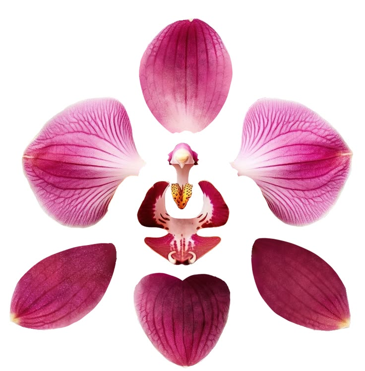
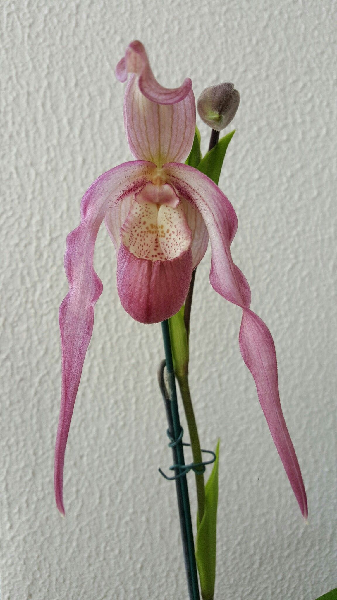

Epiphytes
The majority. They perch on tree bark, taking nothing from the tree itself — not parasites, just tenants with a good view. Their roots are wrapped in velamen, a spongy white sheath that grabs rain in seconds and then dries out again fast.
You cannot tell an orchid by size, colour, or smell. Some are the width of a grain of rice; one Sumatran species grows into a clump you could not lift. What they all share is a floor plan.
Take almost any flower apart and you find sepals on the outside (usually green, usually dull) and petals inside (the pretty ones). Orchids kept the parts and threw out the hierarchy.
An orchid flower has three sepals and three petals, and in most species the sepals are just as showy as the petals — which is why a moth orchid looks like it has five matching wings and a strange tongue. The strange tongue is the sixth part: the middle petal, rebuilt into a labellum, or lip.
Then there is the piece that seals the identification. In nearly every other flowering plant the male parts (stamens) and the female parts (style and stigma) are separate structures. In an orchid they are fused into a single organ, the column. If you are ever unsure whether something is an orchid, look for the column.
Here is my favourite thing about this family. When an orchid bud forms, the lip is at the top — useless, because a bee wants somewhere to stand. So as the bud develops, the stalk beneath the flower twists through a full 180°, carrying the lip down to the bottom where it becomes a landing platform.
The word is resupination, and once you know it you will see it: look at the little green ovary behind an open bloom and you can often spot the twist still held in it, like a wrung-out cloth.
four out of four and you may
start collecting. sorry.

taken apart
Pantone®
15-6313 TCX
Laurel Green
Every orchid flower is an argument aimed at one specific animal, and the lip is where the argument is made. Most of them are honest advertising: a broad platform, a stripe pointing inward, a smell of vanilla or coconut, a drop of nectar at the end of a tube.
A striking number are not honest at all.
The point of the flower is not beauty. Beauty is a side effect of an extremely specific instruction, written for an insect, in a language we happen to find gorgeous.
The majority. They perch on tree bark, taking nothing from the tree itself — not parasites, just tenants with a good view. Their roots are wrapped in velamen, a spongy white sheath that grabs rain in seconds and then dries out again fast.
Same idea, worse address: bare rock, cliff faces, boulder cracks. They live on whatever leaf litter blows past.
Ground-dwellers, common in temperate places — the spotted orchids of a British meadow, the lady's slippers, the Cypripedium. Many die back to an underground tuber each year.
A handful gave up photosynthesis altogether. They have no green in them and live entirely off fungi. Rhizanthella in Western Australia goes further and flowers underground.
This is the single most useful fact for anyone about to buy one: most orchids you can buy are not soil plants. Their roots evolved in moving air on the side of a tree. Pot one in compost and you are drowning it slowly.
| Sympodial | Monopodial | |
|---|---|---|
| Shape | Creeps sideways along a rhizome, throwing up a new shoot each season | One upright stem that grows from the tip, forever |
| Storage | Swollen pseudobulbs hold water and food | No pseudobulbs — stores water in thick leaves and roots |
| Examples | Cattleya, Dendrobium, Oncidium, Cymbidium | Phalaenopsis, Vanda, Angraecum, Vanilla |
| Dividing | Easy — cut the rhizome, keeping 3 or more bulbs per piece | Only from a top cutting with roots, or from a keiki |
| Rest | Many want a dry, cool rest after the new growth matures | Grows more or less year round |
A single orchid pod can hold hundreds of thousands of seeds — in some species, over a million. They are so fine they behave like smoke; the whole point is to travel on air currents to a tree branch far away.
Getting that small costs something. Orchid seed carries no endosperm — no food packed alongside the embryo. It is a speck of tissue with no lunch. To germinate in the wild it has to be found by a compatible mycorrhizal fungus, which grows into it and feeds it sugars until it can make its own.
So the odds are appalling, the numbers are enormous, and the whole family is built on a bet. More on how growers get around this in entry four.
a pod of orchid seed weighs almost nothing and contains an entire meadow's worth of maybe.